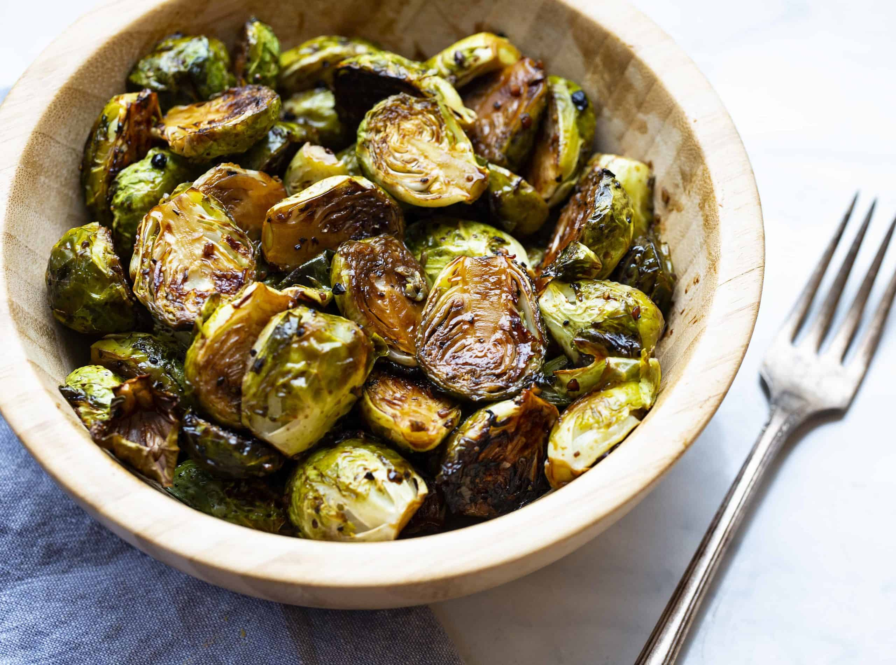

Balsamic-Roasted Brussels Sprouts

Description
Roasted balsamic Brussels sprouts are a simple and delicious side with crispy Brussels sprouts tossed in balsamic vinegar for delicious flavor and great caramelization.
Ingredients
- 1.5lb Brussels sprouts, trimmed and halved
- 4oz pancetta, cut into 1/4" cubes
- 1/4 cup olive oil
- 1.5tsp Kosher salt
- .5tsp ground black pepper
- 1tbsp balsamic vinegar
Steps
- Preheat oven to 400°F
- Wash, trim, and halve Brussels sprouts
- Cut pancetta into 1/4" cubes
- Combine Brussels sprouts, pancetta, olive oil, salt, and pepper, and toss with hands
- Spread mix onto a sheet pan in a single layer
- Roast for 20-30 minutes until sprouts are soft and browned and pancetta is cooked, tossing once during roasting
- Remove from oven and immediately drizzle balsamic vinegar over the sprouts, tossing one more time
- Serve hot